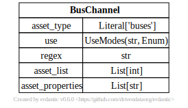
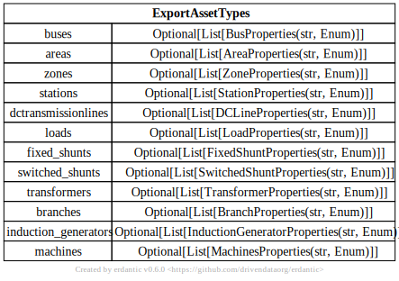
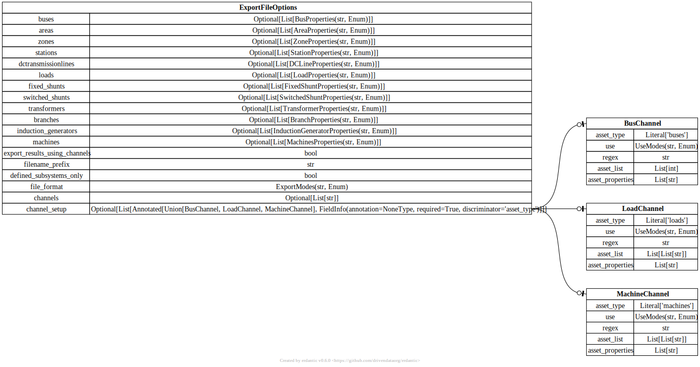
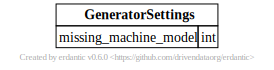
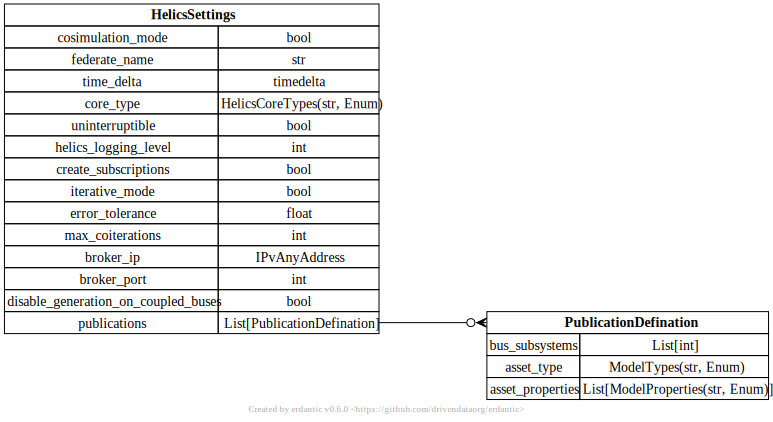
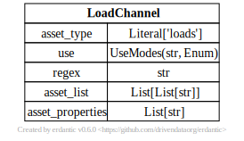
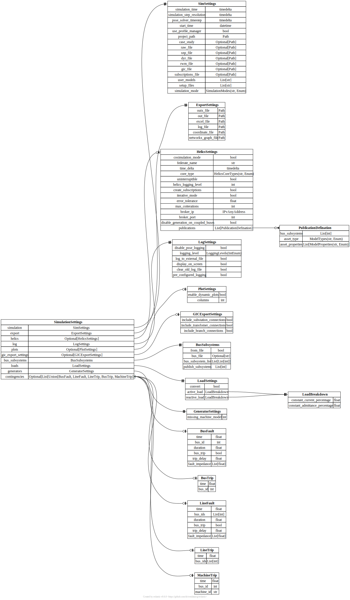

Library data models
This page provides details on the data models part of the PyPSSE library.

Bases: BaseModel
Bus channel model defination
Source code in pypsse\models.py
292
293
294
295
296
297
298
299 | class BusChannel(BaseModel):
"Bus channel model defination"
asset_type: ChannelTypes = ChannelTypes.BUSES
use: UseModes = UseModes.LIST
regex: str = ""
asset_list: List[int] = []
asset_properties: List[str] = ["voltage_and_angle", "frequency"]
|
Bases: BaseModel
Bus fault model defination
Source code in pypsse\models.py
215
216
217
218
219
220
221
222
223
224
225 | class BusFault(BaseModel):
"Bus fault model defination"
time: float = 0.2
bus_id: int = 38205
duration: float = 0.3
bus_trip: bool = False
trip_delay: float = 0.05
fault_impedance: List[int] = [
1.0,
1.0,
]
|
Bases: BaseModel
Bus subsystem model defination
Source code in pypsse\models.py
178
179
180
181
182
183
184
185
186
187
188
189
190
191
192
193
194 | class BusSubsystems(BaseModel):
"Bus subsystem model defination"
from_file: bool = False
bus_file: Optional[str] = None
bus_subsystem_list: List[List[int]] = [
[
74012,
17735,
20115,
38205,
70008,
80511,
],
]
publish_subsystems: List[int] = [
0,
]
|
Bases: BaseModel
Bus trip model defination
Source code in pypsse\models.py
| class BusTrip(BaseModel):
"Bus trip model defination"
time: float = 0.2
bus_id: int = 38205
|

Bases: BaseModel
Valid export models and associated options
Source code in pypsse\models.py
322
323
324
325
326
327
328
329
330
331
332
333
334
335
336
337
338 | class ExportAssetTypes(BaseModel):
"Valid export models and associated options"
buses: Optional[List[BusProperties]] = None
areas: Optional[List[AreaProperties]] = None
zones: Optional[List[ZoneProperties]] = None
stations: Optional[List[StationProperties]] = None
dctransmissionlines: Optional[List[DCLineProperties]] = None
loads: Optional[List[LoadProperties]] = None
fixed_shunts: Optional[List[FixedShuntProperties]] = None
switched_shunts: Optional[List[SwitchedShuntProperties]] = None
transformers: Optional[List[TransformerProperties]] = None
branches: Optional[List[BranchProperties]] = None
induction_generators: Optional[List[InductionGeneratorProperties]] = None
machines: Optional[List[MachinesProperties]] = None
channels: Optional[List[str]] = None
channel_setup: Optional[List[Union[BusChannel, LoadChannel, MachineChannel]]] = None
|

Bases: ExportAssetTypes
Exoprt settings for a PyPSSE project
Source code in pypsse\models.py
| class ExportFileOptions(ExportAssetTypes):
"Exoprt settings for a PyPSSE project"
export_results_using_channels: bool = False
defined_subsystems_only: bool = True
file_format: ExportModes = "h5"
|

Bases: BaseModel
Export setting model defination
Source code in pypsse\models.py
115
116
117
118
119
120
121
122
123 | class ExportSettings(BaseModel):
"Export setting model defination"
outx_file: Path = "test.outx"
out_file: Path = "20LS11p.out"
excel_file: Path = "20LS11p.xls"
log_file: Path = "20LS11p.log"
coordinate_file: Path = ""
networkx_graph_file: Path = "20LS11p.gpickle"
|
Bases: BaseModel
GIC export setting model defination
Source code in pypsse\models.py
| class GICExportSettings(BaseModel):
"GIC export setting model defination"
include_substation_connections: bool = False
include_transfomer_connections: bool = False
include_branch_connections: bool = True
|

Bases: BaseModel
Generator model defination
Source code in pypsse\models.py
| class GeneratorSettings(BaseModel):
"Generator model defination"
missing_machine_model: int = 1
|

Bases: BaseModel
HELICS co-simualtion setting model defination
Source code in pypsse\models.py
137
138
139
140
141
142
143
144
145
146
147
148
149
150
151
152 | class HelicsSettings(BaseModel):
"HELICS co-simualtion setting model defination"
cosimulation_mode: bool = False
federate_name: str = "psse"
time_delta: timedelta = timedelta(seconds=0.00333333333)
core_type: HelicsCoreTypes = "zmq"
uninterruptible: bool = True
helics_logging_level: int = Field(5, ge=1, le=10)
create_subscriptions: bool = True
iterative_mode: bool = False
error_tolerance: float = Field(1e-5, g=0)
max_coiterations: int = Field(15, ge=1)
broker_ip: IPvAnyAddress = "127.0.0.1"
broker_port: int = 23404
disable_generation_on_coupled_buses: bool = True
publications: List[PublicationDefination]
|
Bases: BaseModel
Line fault model defination
Source code in pypsse\models.py
234
235
236
237
238
239
240
241
242
243
244 | class LineFault(BaseModel):
"Line fault model defination"
time: float = 0.2
bus_ids: List[int]
duration: float = 0.3
bus_trip: bool = False
trip_delay: float = 0.05
fault_impedance: List[int] = [
1.0,
1.0,
]
|
Bases: BaseModel
Line trip model defination
Source code in pypsse\models.py
| class LineTrip(BaseModel):
"Line trip model defination"
time: float = 0.2
bus_ids: List[int]
|
Bases: BaseModel
Load ZIP model defination
Source code in pypsse\models.py
| class LoadBreakdown(BaseModel):
"Load ZIP model defination"
constant_current_percentage: float = 0.0
constant_admittance_percentage: float = 0.0
|

Bases: BaseModel
Load channel model defination
Source code in pypsse\models.py
302
303
304
305
306
307
308
309 | class LoadChannel(BaseModel):
"Load channel model defination"
asset_type: ChannelTypes = ChannelTypes.LOADS
use: UseModes = UseModes.LIST
regex: str = ""
asset_list: List[List[str]] = [[]]
asset_properties: List[str] = []
|
Bases: BaseModel
Load model defination
Source code in pypsse\models.py
| class LoadSettings(BaseModel):
"Load model defination"
convert: bool = True
active_load: LoadBreakdown
reactive_load: LoadBreakdown
|
Bases: BaseModel
Logger setting model defination
Source code in pypsse\models.py
155
156
157
158
159
160
161
162 | class LogSettings(BaseModel):
"Logger setting model defination"
disable_psse_logging: bool = True
logging_level: LoggingLevels
log_to_external_file: bool = True
display_on_screen: bool = True
clear_old_log_file: bool = True
pre_configured_logging: bool = False
|

Bases: BaseModel
Machine channel model defination
Source code in pypsse\models.py
312
313
314
315
316
317
318
319 | class MachineChannel(BaseModel):
"Machine channel model defination"
asset_type: ChannelTypes = ChannelTypes.MACHINES
use: UseModes = UseModes.LIST
regex: str = ""
asset_list: List[List[str]] = [[]]
asset_properties: List[str] = ["PELEC", "QELEC", "SPEED"]
|
Bases: BaseModel
Machine trip model defination
Source code in pypsse\models.py
| class MachineTrip(BaseModel):
"Machine trip model defination"
time: float = 0.2
bus_id: int = 38205
machine_id: str = ""
|
Bases: BaseModel
Plotting setting model defination
Source code in pypsse\models.py
| class PlotSettings(BaseModel):
"Plotting setting model defination"
enable_dynamic_plots: bool = False
columns: int = Field(15, ge=1)
|

Bases: BaseModel
Publication setting model defination
Source code in pypsse\models.py
126
127
128
129
130
131
132
133
134 | class PublicationDefination(BaseModel):
"""Publication setting model defination
"""
bus_subsystems: List[int] = [
0,
]
model_type: ModelTypes = "buses"
model_properties: List[ModelProperties] = ["FREQ", "PU"]
|

Bases: BaseModel
Simulation setting model defination
Source code in pypsse\models.py
35
36
37
38
39
40
41
42
43
44
45
46
47
48
49
50
51
52
53
54
55
56
57
58
59
60
61
62
63
64
65
66
67
68
69
70
71
72
73
74
75
76
77
78
79
80
81
82
83
84
85
86
87
88
89
90
91
92
93
94
95
96
97
98
99
100
101
102
103
104
105
106
107
108
109
110
111
112 | class SimSettings(BaseModel):
"Simulation setting model defination"
simulation_time: timedelta = timedelta(seconds=3.0)
simulation_step_resolution: timedelta = timedelta(seconds=0.025)
psse_solver_timestep: timedelta = timedelta(seconds=0.00333333333)
start_time: datetime = "01/01/2020 00:00:00"
use_profile_manager: bool
psse_path: Path = "C:/Program Files/PTI/PSSE35/35.4/PSSPY39232"
project_path: Path = "C:/Users/alatif/Desktop/NAERM/models/pyPSSEModel"
case_study: Optional[Path] = None
raw_file: Optional[Path] = None
snp_file: Optional[Path] = None
dyr_file: Optional[Path] = None
rwm_file: Optional[Path] = None
gic_file: Optional[Path] = None
subscriptions_file: Optional[Path] = None
user_models: List[str] = []
setup_files: List[str] = []
simulation_mode: SimulationModes
@model_validator(mode="after")
def sim_res_smaller_than_sim_time(self):
assert (
self.simulation_step_resolution <= self.simulation_time
), "simulation_step_resolution should be smaller than simulation_time"
return self
@model_validator(mode="after")
def psse_res_smaller_than_sim_time(self):
assert (
self.psse_solver_timestep <= self.simulation_time
), "psse_solver_timestep should be smaller than simulation_time"
return self
@model_validator(mode="after")
def validate_case_study(self):
file_types = ["case_study", "raw_file", "snp_file", "dyr_file", "rwm_file", "gic_file"]
base_project_path = self.project_path
for file in file_types:
file_path = getattr(self, file)
if file_path:
file_path = base_project_path / CASESTUDY_FOLDER / file_path
setattr(self, file, file_path)
assert file_path.exists(), f"{file_path} does not exist"
return self
@model_validator(mode="after")
def validate_subscription_file(self):
base_project_path = self.project_path
if self.subscriptions_file:
self.subscriptions_file = base_project_path / self.subscriptions_file
assert self.subscriptions_file.exists(), f"{self.subscriptions_file} does not exist"
data = pd.read_csv(self.subscriptions_file)
csv_cols = set(data.columns)
sub_cols = {e.value for e in SubscriptionFileRequiredColumns}
assert sub_cols.issubset(csv_cols), f"{sub_cols} are required columns for a valid subscription file"
return self
@model_validator(mode="after")
def validate_user_models(self):
base_project_path = self.project_path
if self.user_models:
paths = []
for file in self.user_models:
model_file = base_project_path / CASESTUDY_FOLDER / file
assert model_file.exists(), f"{model_file} does not esist"
assert model_file.suffix == ".dll", "Invalid file extension. Use dll files"
paths.append(model_file)
self.user_models = paths
return self
@model_validator(mode="after")
def validate_simulation_mode(self):
if self.simulation_mode in [SimulationModes.DYNAMIC, SimulationModes.SNAP]:
assert (
not self.use_profile_manager
), "Profile manager can not be used for dynamic simulations. Set 'Use profile manager' to False"
return self
|

Bases: BaseModel
PyPSSE project settings
Source code in pypsse\models.py
260
261
262
263
264
265
266
267
268
269
270
271
272
273
274
275
276
277
278
279
280
281
282
283
284
285
286
287
288
289 | class SimulationSettings(BaseModel):
"PyPSSE project settings"
simulation: SimSettings
export: ExportSettings
helics: Optional[HelicsSettings] = None
log: LogSettings
plots: Optional[PlotSettings] = None
gic_export_settings: Optional[GICExportSettings] = None
bus_subsystems: BusSubsystems
loads: LoadSettings
generators: GeneratorSettings
contingencies: Optional[List[Union[BusFault, LineFault, LineTrip, BusTrip, MachineTrip]]] = None
@model_validator(mode="after")
def validate_export_paths(self):
base_project_path = self.simulation.project_path
if self.export.outx_file:
self.export.outx_file = base_project_path / EXPORTS_FOLDER / self.export.outx_file
if self.export.out_file:
self.export.out_file = base_project_path / EXPORTS_FOLDER / self.export.out_file
if self.export.excel_file:
self.export.excel_file = base_project_path / EXPORTS_FOLDER / self.export.excel_file
if self.export.log_file:
self.export.log_file = base_project_path / LOGS_FOLDER / self.export.log_file
if self.export.networkx_graph_file:
self.export.networkx_graph_file = base_project_path / EXPORTS_FOLDER / self.export.networkx_graph_file
if self.export.coordinate_file:
self.export.coordinate_file = base_project_path / EXPORTS_FOLDER / self.export.coordinate_file
return self
|
{kind=link}
{kind=link}
{kind=link}
{kind=link}
{kind=link}
{kind=link}
{kind=link}
{kind=link}
{kind=link}
{kind=link}
{kind=link}
{kind=link}
{kind=link}
{kind=link}
{kind=link}
{kind=link}
{kind=link}
{kind=link}